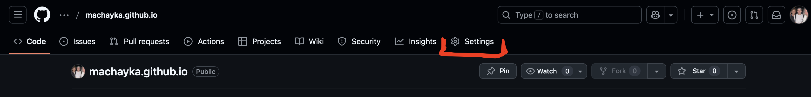
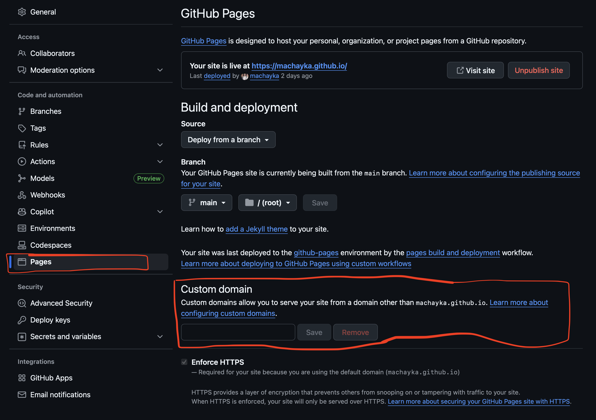
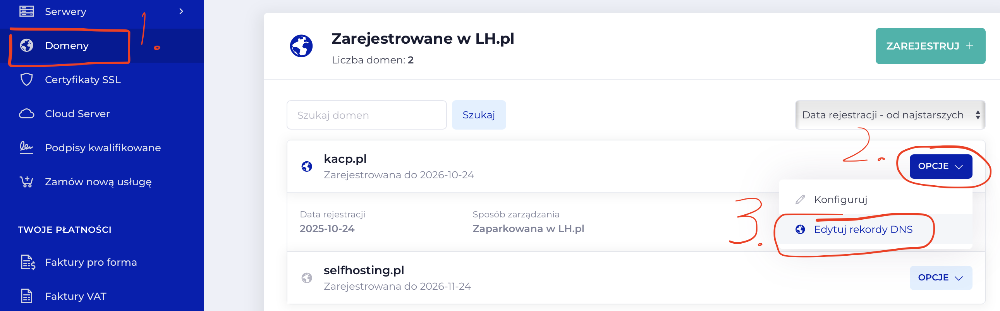
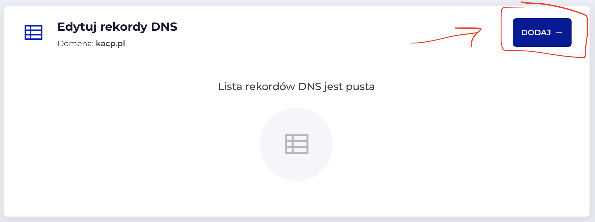
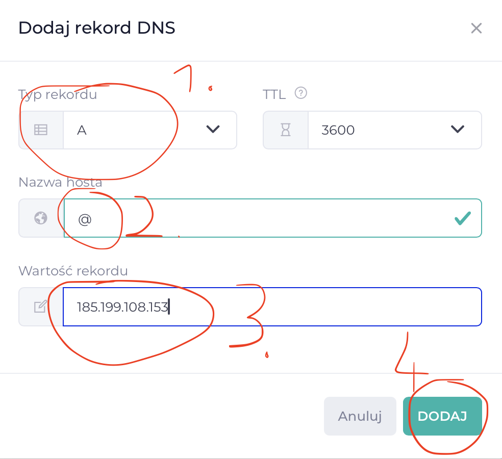
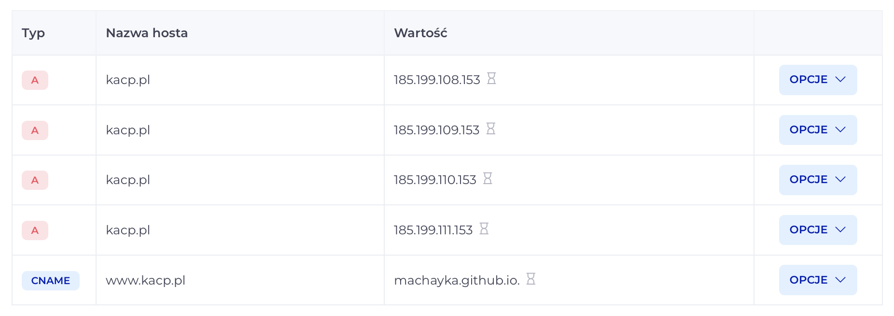

Podłącz własną domenę
Dlaczego własna domena?
Zamiast nazwa-konta.github.io możesz mieć profesjonalną domenę jak mojastrona.pl lub moja-firma.com.
Zamiast nazwa-konta.github.io możesz mieć profesjonalną domenę jak mojastrona.pl lub moja-firma.com.
Domena to adres Twojej strony w internecie. GitHub Pages pozwala bezpłatnie podłączyć własną domenę do Twojej strony.
Krok po kroku - podłączenie domeny
-
Krok 1: Kup domenę
Polecane serwisy:
-
Krok 2: Przejdź do ustawień repozytorium na GitHub
 -
Krok 3: Znajdź sekcję "Pages"
W menu po lewej stronie kliknij Pages
-
Krok 4: Dodaj custom domain
-
• W sekcji "Custom domain" wpisz swoją domenę, którą kupiłeś/aś (np.
mojastrona.pl) - • Kliknij Save
- • GitHub pokaże Ci błąd - to normalne, bo DNS jeszcze nie jest skonfigurowany 
-
• W sekcji "Custom domain" wpisz swoją domenę, którą kupiłeś/aś (np.
-
Krok 5: Skonfiguruj DNS u dostawcy domeny
W poradniku zrobimy to na przykłądzie lh.pl, ale proces wszędzie jest podobny.
  Zaloguj się do panelu swojego dostawcy domeny i dodaj rekordy DNS:
- Type: A, Host: @, Value: 185.199.108.153
- Type: A, Host: @, Value: 185.199.109.153
- Type: A, Host: @, Value: 185.199.110.153
- Type: A, Host: @, Value: 185.199.111.153
Jeśli używasz subdomeny (www.mojastrona.pl):
- Type: CNAME, Host: www, Value: nazwa-konta.github.io
W moim przypadku wygląda to tak:
 -
Krok 6: Poczekaj na propagację DNS
- • DNS może propagować się od 15 minut do 24 godzin
- • Najczęściej działa po 1-2 godzinach
-
Krok 7: Włącz HTTPS
- • Wróć do Settings → Pages na GitHubie
- • Zaznacz opcję "Enforce HTTPS"
- • Twoja strona będzie bezpieczna (zielona kłódka w przeglądarce)
💡 Ważne informacje
Bądź cierpliwy!
DNS potrzebuje czasu na propagację. Jeśli domena nie działa od razu, to normalne. Sprawdź ponownie za 1-2 godziny.
DNS potrzebuje czasu na propagację. Jeśli domena nie działa od razu, to normalne. Sprawdź ponownie za 1-2 godziny.
Domena vs subdomena
Możesz użyć zarówno mojastrona.pl (domena główna) jak i www.mojastrona.pl (subdomena). GitHub Pages obsługuje oba warianty.
Możesz użyć zarówno mojastrona.pl (domena główna) jak i www.mojastrona.pl (subdomena). GitHub Pages obsługuje oba warianty.
🎉 Gratulacje!
Twoja strona jest teraz dostępna pod własną domeną!
Masz profesjonalną stronę internetową.
Masz profesjonalną stronę internetową.